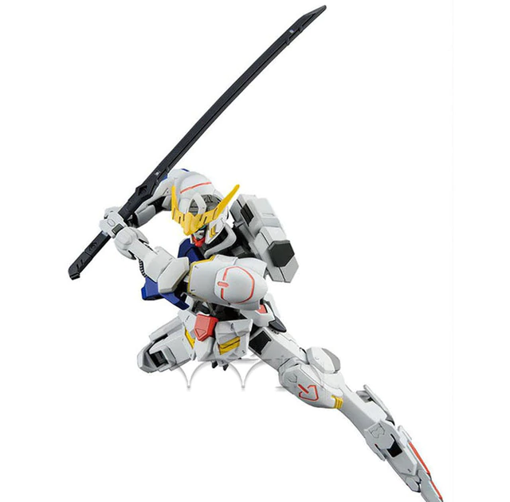

Home | Exia Gundam | Unicorn Gundam | Strike Gundam | Barbatos Gundam
The Gundam Barbatos is one of 72 "Gundam" frames that was produced and used in the Calamity War, roughly 300 years ago. After it was recovered, Chryse Guard Security used it as a power reactor. Aside from the fact that its Ahab Reactors were still functional, this was done mainly because Barbatos' cockpit was missing when it was found. A new cockpit similar to the one used by the CGS mobile workers was installed prior to its redeployment by the 3rd Group.[4] Poor maintenance over the centuries since the Calamity War has degraded the Barbatos' armor and full combat potential.
Click Here for more Information